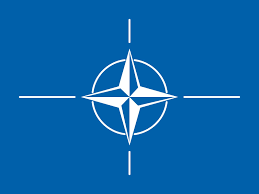

Stated Foreign Policy Goals
Multilateralism
Germany is committed to multilateralism and regards it as the most important principle of the international order. Germany believes that cooperation (via multilateral organizations) is the solution to many foreign policy issues, such as climate change, internet freedom, immigration, and resource security.
Germany has been a member of NATO since 1955 (as West Germany, with East Germany being integrated after reunification), and is a member of the European Union, having joined the European Coal and Steel Community (which later became the EU) in 1958. Both the Federal Republic of Germany (West Germany) and the German Democratic Republic (East Germany) joined the UN in 1973, and in 1990, East Germany was absorbed into West Germany and they became a single member of the UN.

International Organization Memberships: North Atlantic Treaty Organization (NATO), United Nations, European Union (formerly ECSC), , G7 (2022 host), G20, Organization for Security and Co-operation in Europe
Three Pillars of German Foriegn Policy
In addition to multilateralism, the other pillars of German foreign policy are economic policy and cultural exchange.
Germany wants to help German-based companies access international markets, and facilitate the free movement of goods and capital across national boundaries.
Additionally, Germany seeks to promote cultural exchange and build the foundations of intercultural trust with Germany. To accomplish this, German is promoted as a foreign language and academic exchange is valued.
EU and European Integration
Germany is a strong proponent of the EU and wishes to strengthen cohesion among the member states. Germany is committed to working with other member states to achieve foreign affairs goals through common policy.
Transatlantic Parntership
Another important diplomatic relationship to Germany is their relationship with the United States. As Germany’s closest ally outside of Europe, an open dialogue with the US is essential to maintaining that relationship.

Peace and Security
Germany defines peace within the framework of multilateral institutions and promotes the use of diplomatic methods to settle disputes. Germany has some security responsibility, but advocates for disarmament, arms control, and non-proliferation. Peace policy also includes stabilization, crisis-prevention, peace-building after conflict, and humanitarian aid abroad instead of engaging in military action. Germany does not have weapons of mass effect, but does have the capability to produce them.
Human Rights and Rule of Law
Through foreign policy, Germany wishes to strengthen democracy, the rule of law, and human rights around the world. Germany does this in principal and out of security interests.